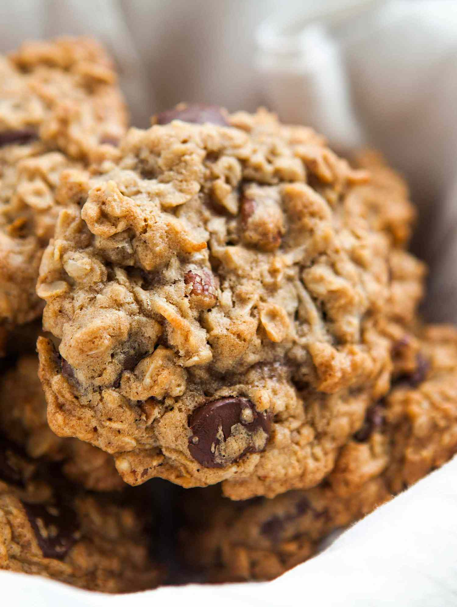

Oatmeal Chocolate Chip Cookies
Home

Gooey, crumbly, and when stored properly, gets better with age!
Ingredients
- 1 1/2 cups packed brown sugar
- 1 cup butter, softened
- 1 teaspoon vanilla
- 1 large egg
- 2 cups oats
- 1 1/2 cups all purpose flour
- 1 teaspoon baking soda
- 1/4 teaspoon salt
- 1 cup semisweet chocolate chips
- 1/2 teaspoon almond extract
Steps
- Preheat oven to 350 degrees.
- Add flour, brown sugar, salt, and oats to mixing bowl.
Mix well.
- Add softened butter, vanilla, and egg.
Mix well. Dough will be thick.
- Finally, add chocolate chips and almond extract.
Mix well.
- Scoop dough with teaspoon, rounded on top.
- Place dough on baking sheet, 1 inch apart.
- Bake for 10 minutes.
- Let cool for 2 minutes, to eat warm.
- Store with slice of bread in container, to preserve softness.